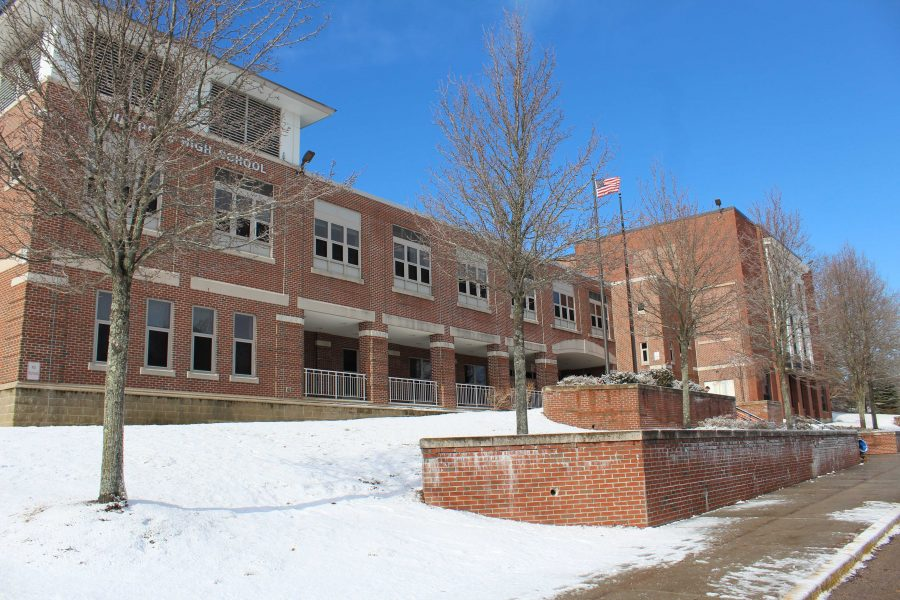
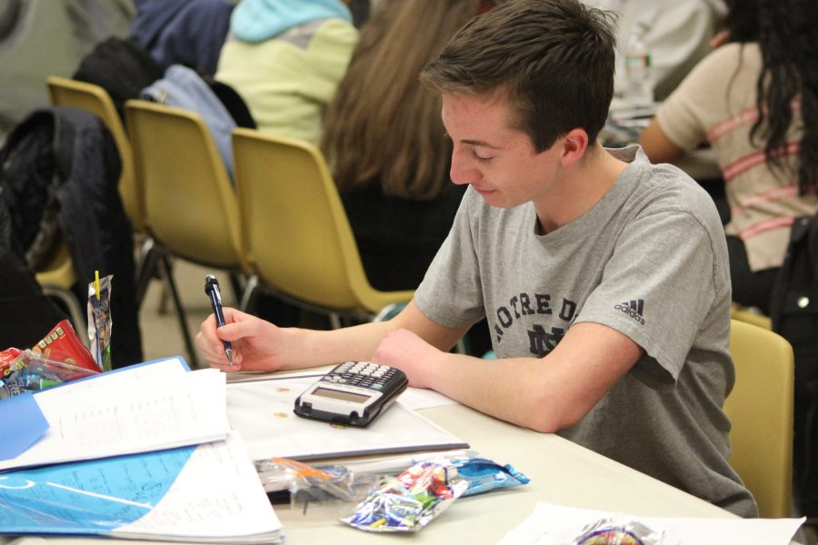
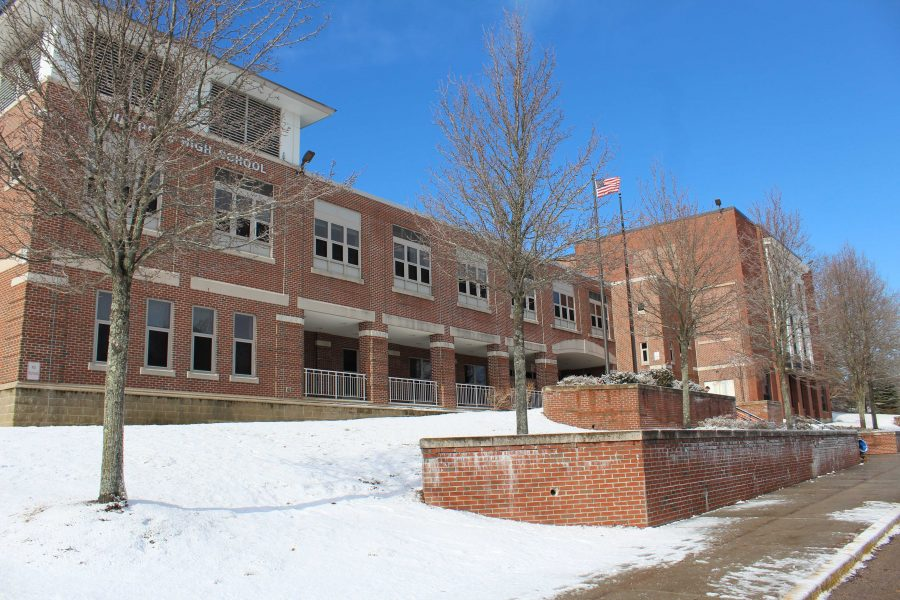
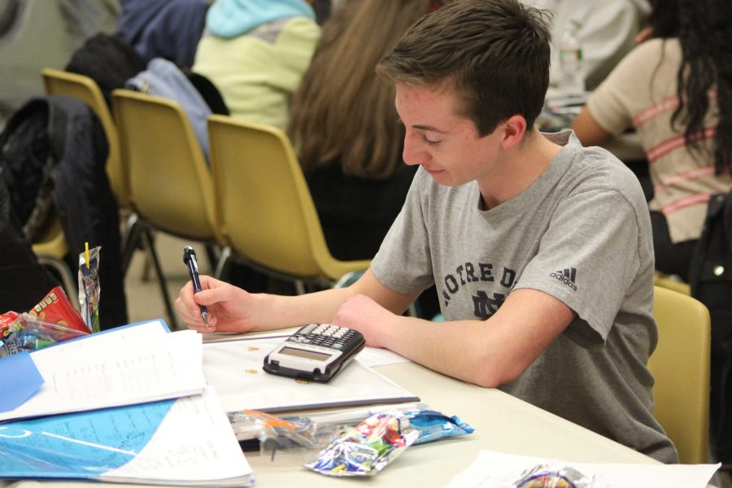

Walpole High School
Mathematics
(Course Descriptions and Expectations)
Algebra I Honors
Algebra I CP1
Algebra I CP2
Geometry Honors
Geometry CP1
Geometry CP2
Algebra II/Precalculus Honors
Algebra II/Precalculus CP1
Algebra II CP2
Trigonometry & Advanced Math Topics CP1
Calculus Honors
Calculus CP1
Statistics Honors
Statistics CP1
Statistics CP2
Discrete Math CP2
AP Calculus AB/BC
AP Statistics
 



Jonathan Ridolfi, Department Chairperson
Julie Butler
Ashley Cannon
Monica Friar
Vanessa Hackett
Sheryl Lerner
Kathleen Milne
Zachary Okolowitcz
Leslie Rosenthal
Rachael Sprague
David St. Martin
Caitlin Sullivan
Patricia Watters
Andrew Yurgold